Arraste as imagens, copie a legenda de cada rede e aprove ou peça ajuste. Post com pendência só vai ao ar depois que ela for resolvida.
Post 06 · Terça-feira, 01/12 · 18h
A Net do Bem em 5 slides
Fase 1 · Quem somosPronto Carrossel educativo · 6 imagens
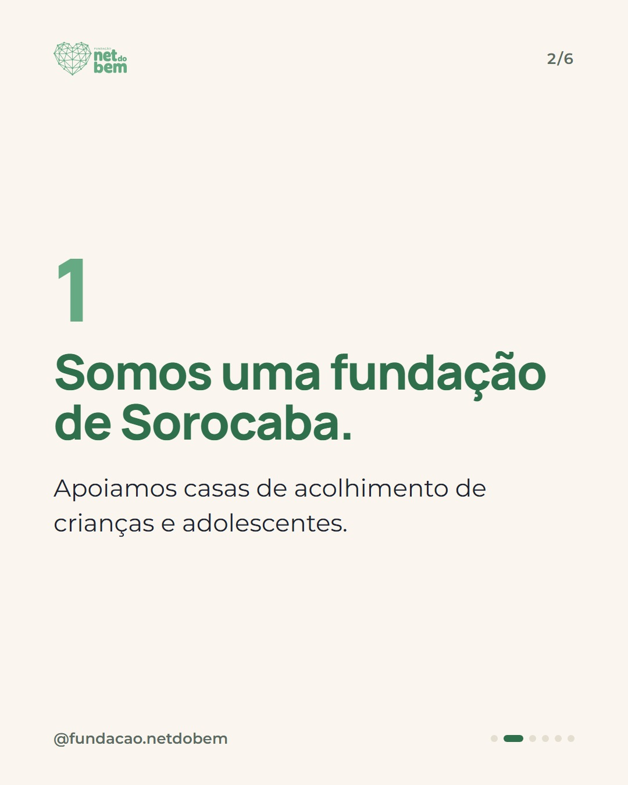
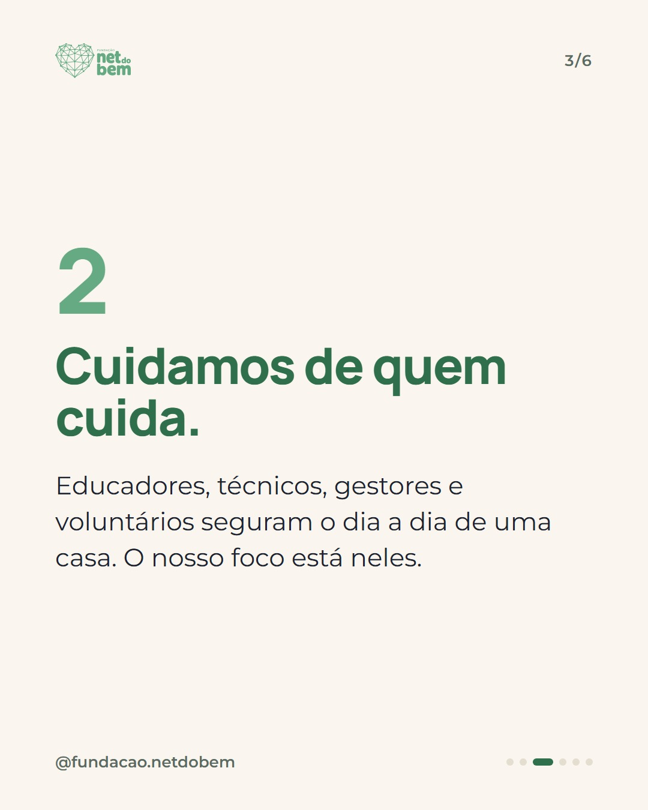
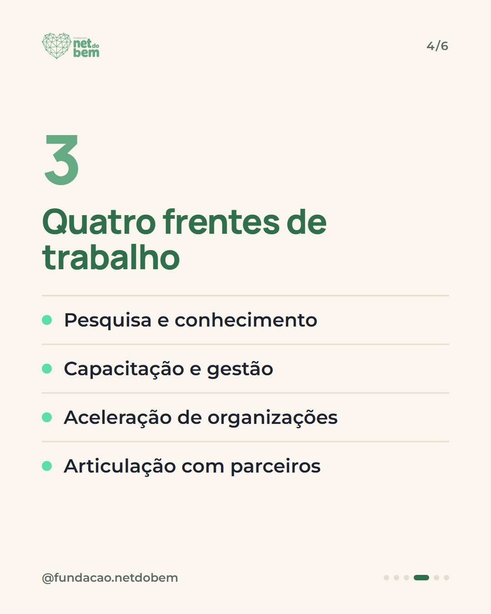
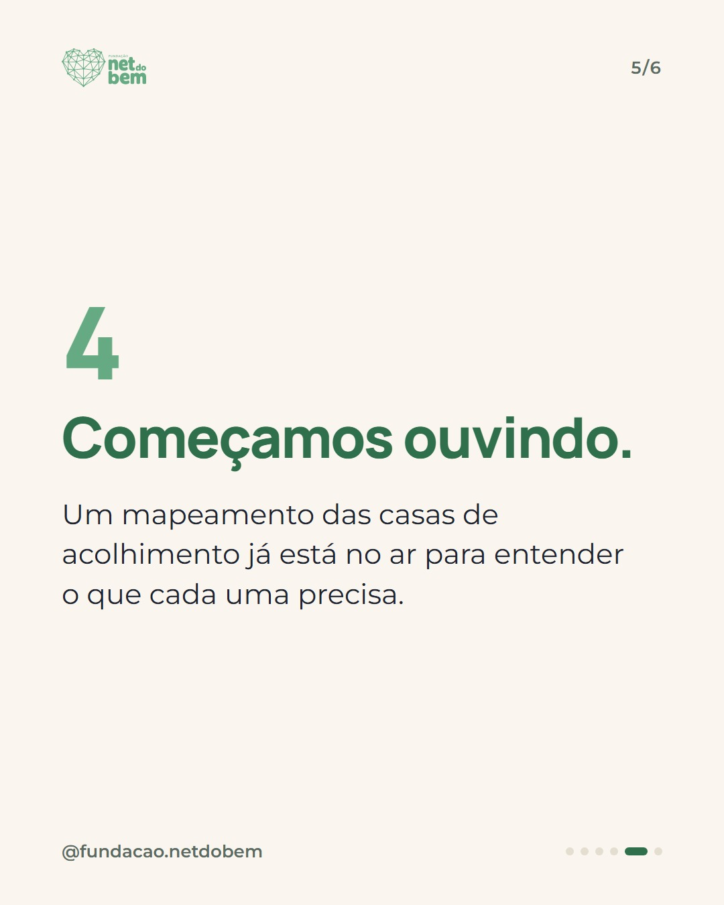
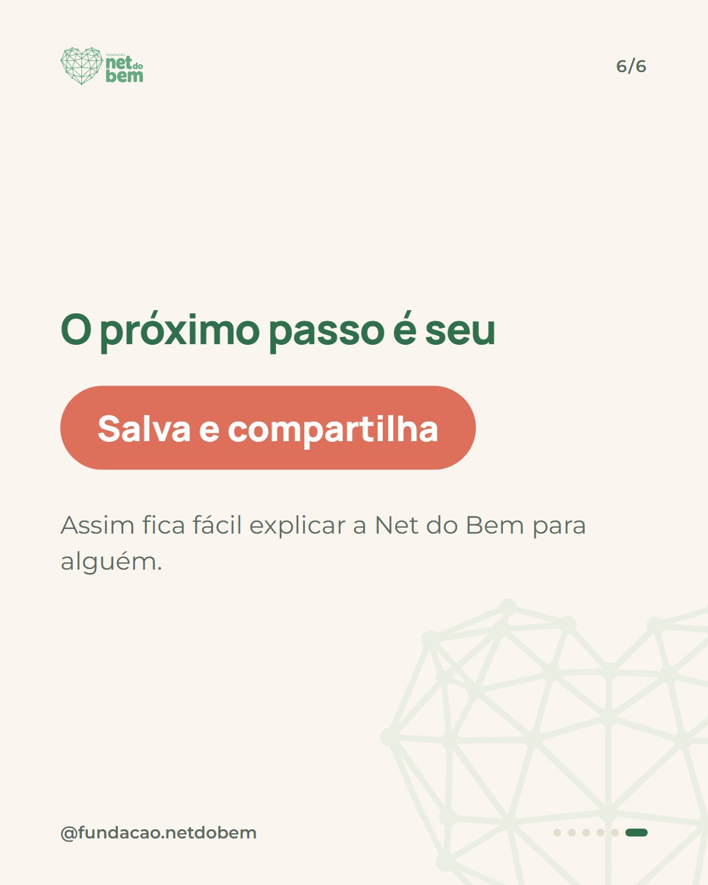
1/6
PautaPauta-mãe 1 · Quem somos
CTA únicoSalva e compartilha
PúblicoTodos os públicos
ObjetivoA pessoa entender em 10 segundos o que a fundação faz. Post para fixar no perfil.
A Net do Bem em 5 slides.
Se você chegou agora, este é o resumo. Apoiamos casas de acolhimento e as equipes que trabalham nelas, com pesquisa, formação, apoio de gestão e conexão com parceiros. O primeiro passo é ouvir as casas, com um mapeamento que já está no ar.
Salva e compartilha.
#FundacaoNetDoBem #Sorocaba #Acolhimento #QuemCuidaDeQuemCuida
A Fundação Net do Bem em 5 slides.
Se você chegou agora, este é o resumo. Apoiamos casas de acolhimento e as equipes que trabalham nelas, com pesquisa, formação, apoio de gestão e conexão com parceiros. O primeiro passo é ouvir as casas, com um mapeamento que já está no ar.
Salve e compartilhe.
Carrossel em fundo creme com títulos em verde. Slides: somos uma fundação de Sorocaba; cuidamos de quem cuida; quatro frentes de trabalho (pesquisa, capacitação, aceleração e articulação); começamos ouvindo; e o convite para salvar e compartilhar.
1 ideia · 1 CTA · gancho até 6 palavras · sem criança identificável · sem endereço ou rotina · sem cópia de perfil de referência · sem Imposto de Renda · rosto de adulto só com autorização · legenda revisada por 1 pessoa da fundação.
Post 07 · Quinta-feira, 03/12 · 18h
O que não fazemos
Fase 1 · Quem somosPronto Carrossel educativo · 6 imagens
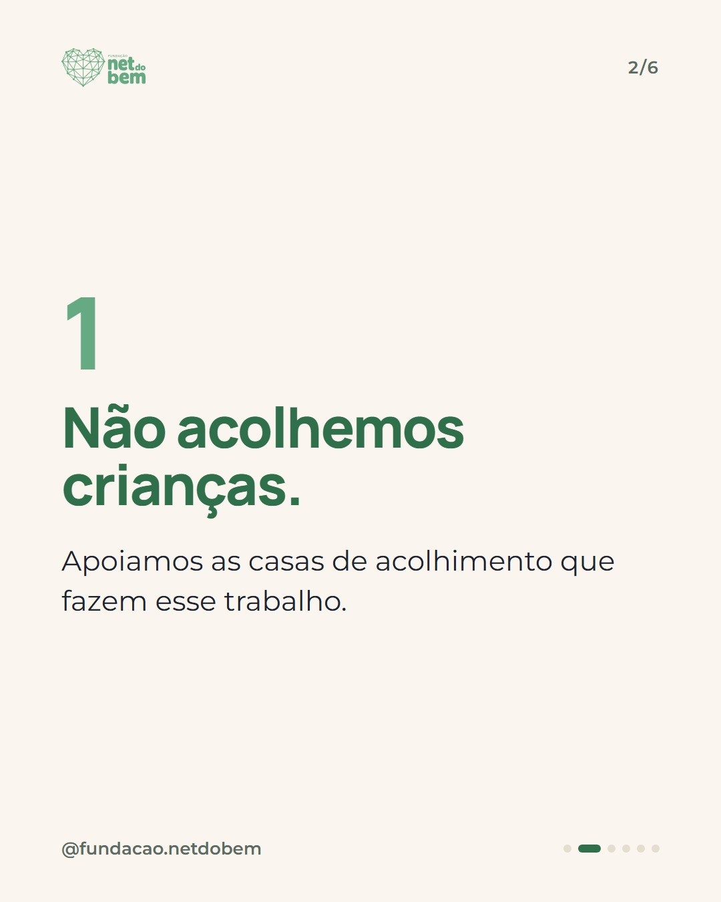
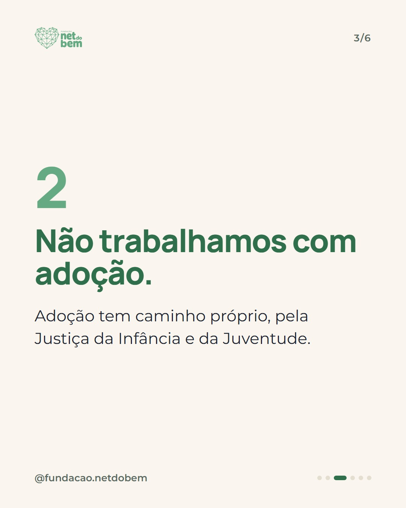
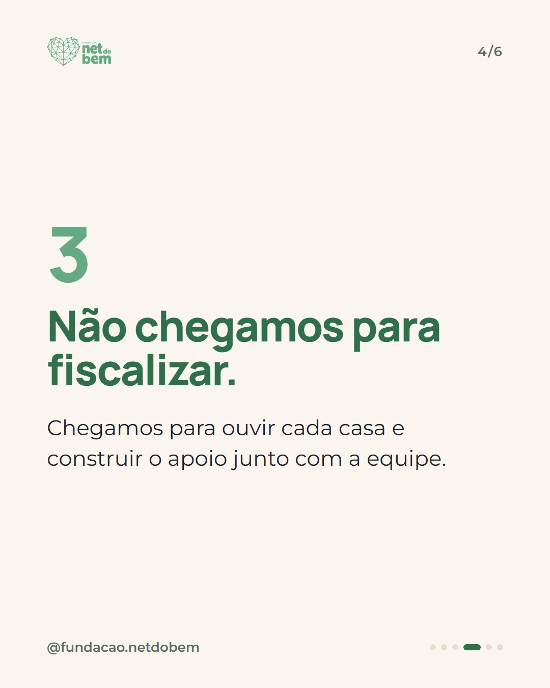
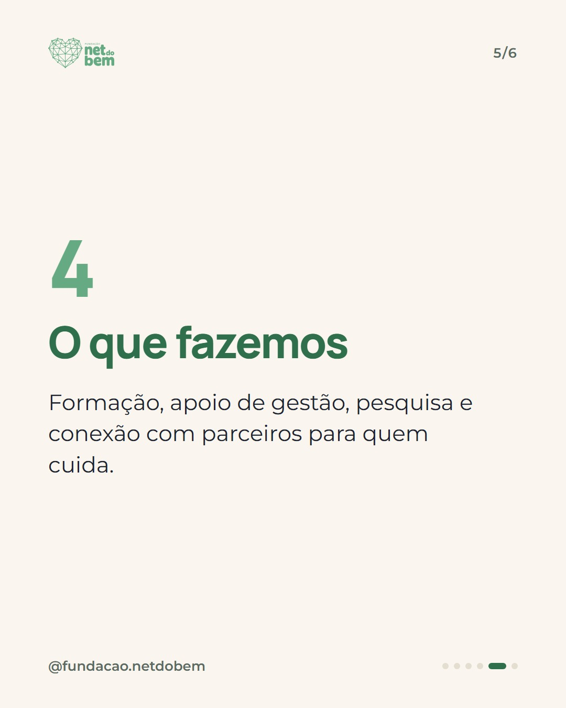
1/6
PautaPauta-mãe 2 · O que não fazemos
CTA únicoSalva e compartilha
PúblicoSociedade e potenciais apoiadores
ObjetivoEvitar a confusão com abrigo e adoção logo no começo.
O que não fazemos.
A Net do Bem não acolhe crianças e não trabalha com adoção. Apoiamos as casas de acolhimento que já fazem esse trabalho, com formação, gestão e conexão com parceiros. E chegamos para ouvir, sem fiscalizar ninguém.
Salva e compartilha.
#FundacaoNetDoBem #Sorocaba #Acolhimento #QuemCuidaDeQuemCuida
O que a Fundação Net do Bem não faz.
Não acolhemos crianças e não trabalhamos com adoção. Apoiamos as casas de acolhimento que já fazem esse trabalho, com formação, gestão e conexão com parceiros. Chegamos para ouvir cada casa, sem papel de fiscalização.
Salve e compartilhe.
Carrossel em fundo creme: não acolhemos crianças; não trabalhamos com adoção; não chegamos para fiscalizar; e o que fazemos, formação, apoio de gestão, pesquisa e conexão com parceiros.
1 ideia · 1 CTA · gancho até 6 palavras · sem criança identificável · sem endereço ou rotina · sem cópia de perfil de referência · sem Imposto de Renda · rosto de adulto só com autorização · legenda revisada por 1 pessoa da fundação.
Post 08 · Sábado, 05/12 · 11h
Por que Sorocaba?
Fase 1 · Quem somosPendência Carrossel educativo · 5 imagens
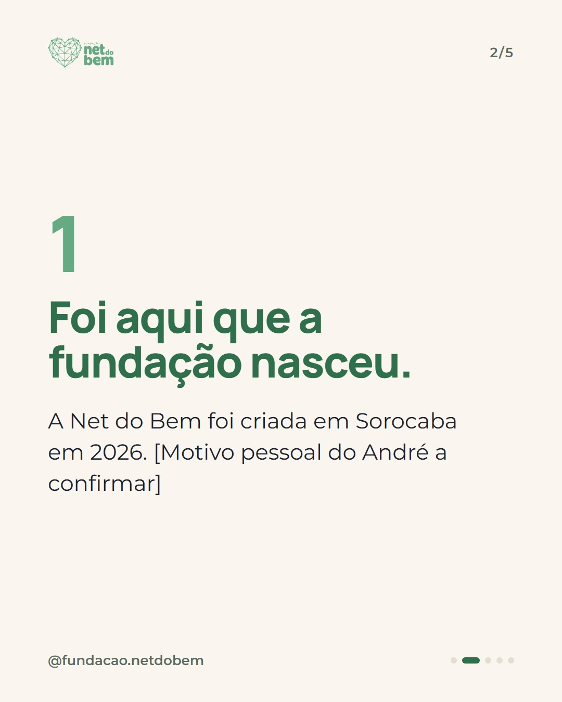
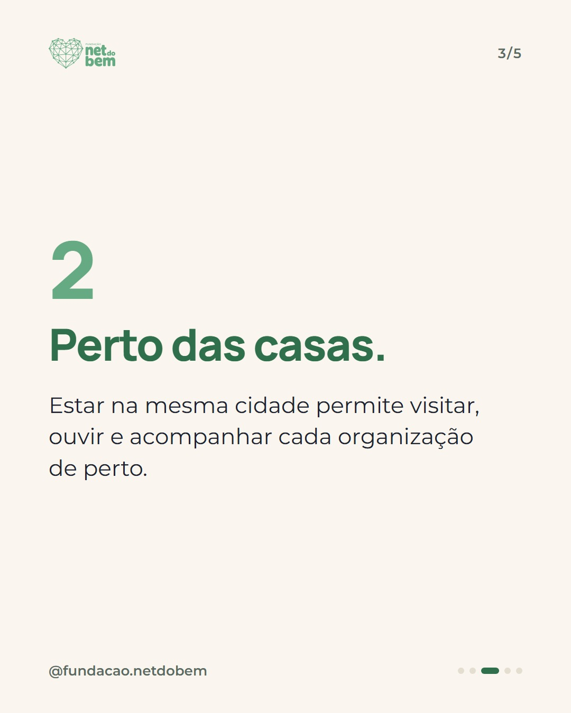
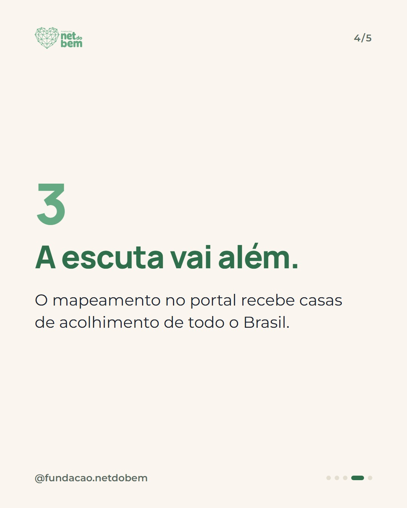
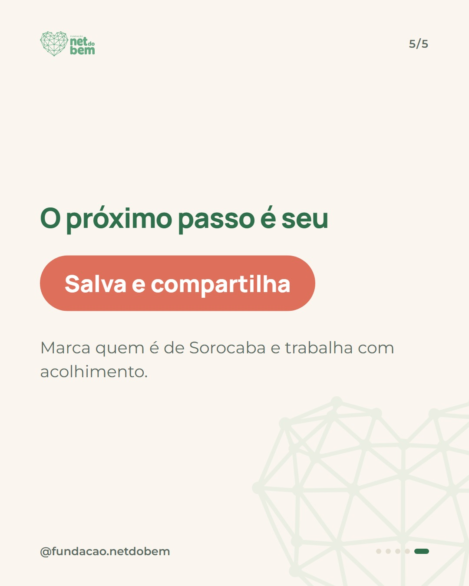
1/5
Rascunho com pendência
Confirmar com o André o motivo pessoal da escolha de Sorocaba para o slide 2. O texto atual só usa o que está no CNPJ e no site.
Confirmar se a pesquisa do portal já recebe casas de fora de Sorocaba (o portal fala em diagnóstico nacional).
PautaFase 1 · Por que Sorocaba?
CTA únicoSalva e compartilha
PúblicoComunidade de Sorocaba
ObjetivoDar raiz local à fundação.
Por que Sorocaba?
A Net do Bem nasceu aqui, e começar perto das casas de acolhimento permite visitar, ouvir e acompanhar cada uma. [Frase do André sobre a escolha da cidade, a confirmar]
Salva e compartilha.
#FundacaoNetDoBem #Sorocaba #Acolhimento #QuemCuidaDeQuemCuida
Por que a Fundação Net do Bem nasceu em Sorocaba?
Começar perto das casas de acolhimento permite visitar, ouvir e acompanhar cada uma. [Frase do André sobre a escolha da cidade, a confirmar]
Salve e compartilhe.
Carrossel em fundo creme sobre a escolha de Sorocaba: a fundação nasceu na cidade, trabalha perto das casas e recebe casas de todo o Brasil no mapeamento.
1 ideia · 1 CTA · gancho até 6 palavras · sem criança identificável · sem endereço ou rotina · sem cópia de perfil de referência · sem Imposto de Renda · rosto de adulto só com autorização · legenda revisada por 1 pessoa da fundação.
Post 09 · Terça-feira, 08/12 · 18h
Por que criei a Net do Bem
Fase 1 · Quem somosPendência Reels 30 a 45 s + capa · 1 imagem
1/1
Rascunho com pendência
Gravar o André olhando para a câmera, fundo real, sem estúdio, até 04/12.
Se o Reels já tiver sido publicado em 29/11, trocar esta data pelo carrossel de retratos.
PautaFase 1 · Reels do fundador
CTA únicoSalva e compartilha
PúblicoTodos os públicos
ObjetivoRosto real e motivação do fundador, em vídeo.
Roteiro
0 a 3 s: "Depois de 30 anos construindo empresa, eu quis devolver uma parte disso."
Meio: "Conheci casas de acolhimento com equipes incríveis e sem apoio de gestão, de captação, de planejamento. A Net do Bem existe para levar esse apoio."
Fecho: "Salva este vídeo e compartilha com quem trabalha com acolhimento."
Por que criei a Net do Bem.
O André passou mais de 30 anos construindo empresa na tecnologia. Neste vídeo, ele conta por que decidiu colocar essa experiência de gestão a serviço das casas de acolhimento.
Salva e compartilha.
#FundacaoNetDoBem #Sorocaba #Acolhimento #QuemCuidaDeQuemCuida
Por que criei a Fundação Net do Bem.
O André Facciolli passou mais de 30 anos construindo empresa na tecnologia. Neste vídeo, ele conta por que decidiu colocar essa experiência de gestão a serviço das casas de acolhimento.
Salve e compartilhe.
Capa de Reels com retrato em massinha do André Facciolli e o título Por que criei a Net do Bem.
1 ideia · 1 CTA · gancho até 6 palavras · sem criança identificável · sem endereço ou rotina · sem cópia de perfil de referência · sem Imposto de Renda · rosto de adulto só com autorização · legenda revisada por 1 pessoa da fundação.
Post 10 · Quinta-feira, 10/12 · 18h
3 perguntas da inauguração
Fase 1 · Quem somosPendência Carrossel educativo · 5 imagens
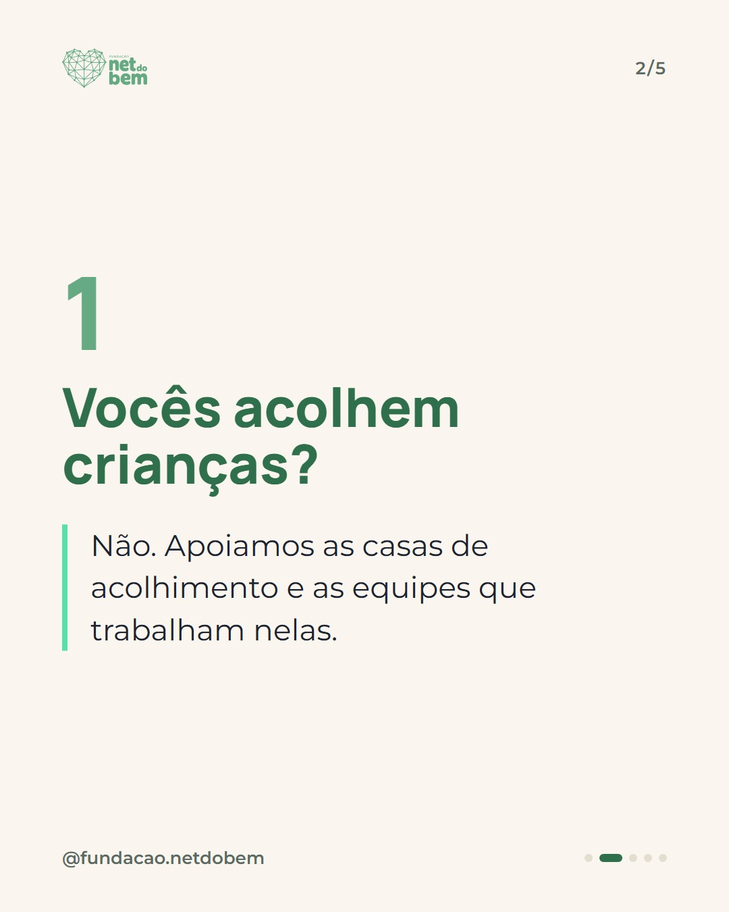
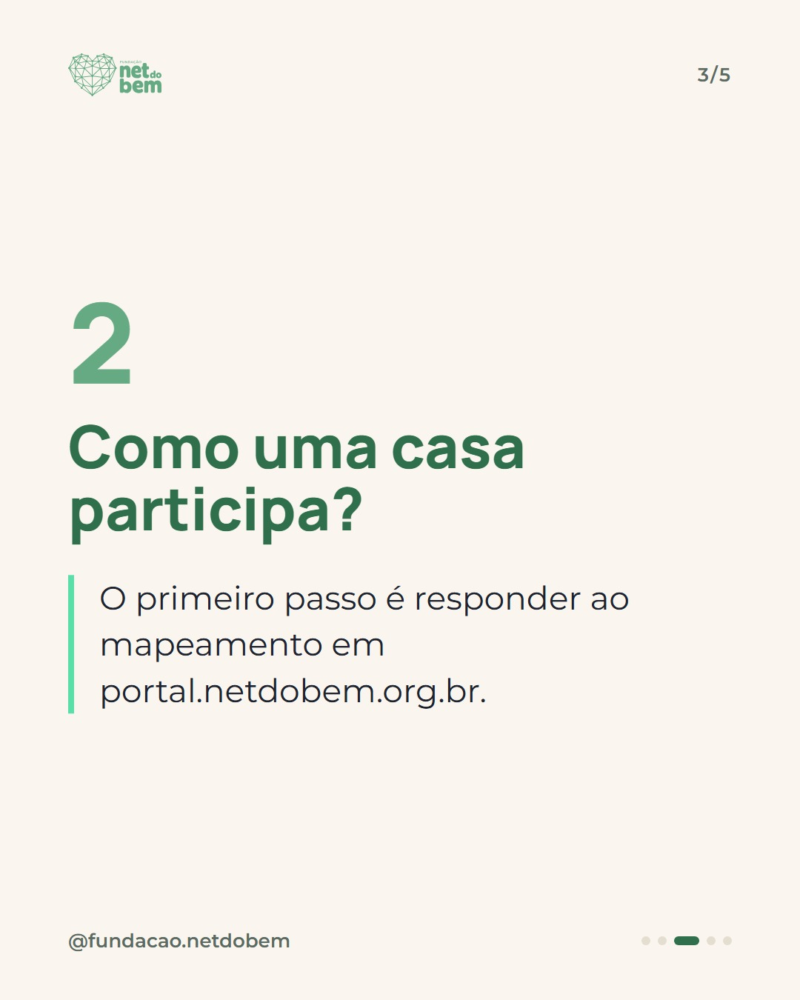
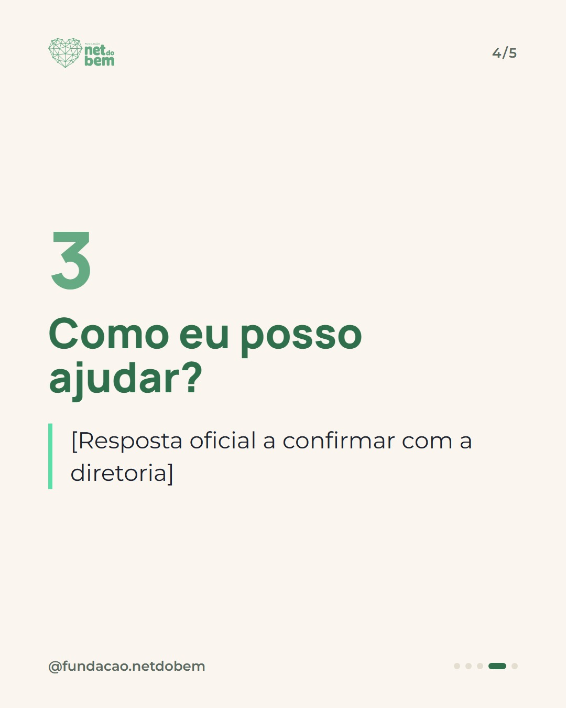
1/5
Rascunho com pendência
Trocar pelas 3 perguntas que a equipe mais ouviu na inauguração (pedir à Patrícia e à Agda até 05/12).
Definir a resposta oficial para "como posso ajudar?" antes de publicar.
PautaPauta-mãe 9 · Perguntas que mais recebemos
CTA únicoSalva e compartilha
PúblicoConvidados, casas e apoiadores
ObjetivoResponder as dúvidas reais que surgiram no evento.
3 perguntas da inauguração.
Separamos as dúvidas que mais ouvimos na quinta-feira, 26/11. A primeira é a mais comum: a Net do Bem não acolhe crianças. Apoiamos as casas e as equipes que fazem esse trabalho.
Salva e compartilha.
#FundacaoNetDoBem #Sorocaba #Acolhimento #QuemCuidaDeQuemCuida
3 perguntas que ouvimos na inauguração.
Separamos as dúvidas que mais apareceram no dia 26/11. A primeira é a mais comum: a Fundação Net do Bem não acolhe crianças. Apoiamos as casas e as equipes que fazem esse trabalho.
Salve e compartilhe.
Carrossel de perguntas e respostas em fundo creme: vocês acolhem crianças; como uma casa participa; como eu posso ajudar.
1 ideia · 1 CTA · gancho até 6 palavras · sem criança identificável · sem endereço ou rotina · sem cópia de perfil de referência · sem Imposto de Renda · rosto de adulto só com autorização · legenda revisada por 1 pessoa da fundação.
Post 11 · Sábado, 12/12 · 11h
Quem fortalece uma organização alcança muitas histórias
Fase 1 · Quem somosPronto Card de posicionamento · 1 imagem
1/1
PautaCard de posicionamento da semana
CTA únicoSalva e compartilha
PúblicoEmpresas e potenciais parceiros
ObjetivoReforçar o modelo: apoiar a organização em vez de atender direto.
Quem fortalece uma organização alcança muitas histórias.
Uma casa de acolhimento bem organizada atende crianças e adolescentes por anos, com a mesma equipe ganhando experiência. Por isso a Net do Bem investe na organização e em quem trabalha nela.
Salva e compartilha.
#FundacaoNetDoBem #Sorocaba #Acolhimento #QuemCuidaDeQuemCuida
Quem fortalece uma organização alcança muitas histórias.
Uma casa de acolhimento bem organizada atende crianças e adolescentes por anos, com a mesma equipe ganhando experiência. Por isso a Fundação Net do Bem investe na organização e em quem trabalha nela.
Salve e compartilhe.
Card verde profundo com a frase em branco: Quem fortalece uma organização alcança muitas histórias.
1 ideia · 1 CTA · gancho até 6 palavras · sem criança identificável · sem endereço ou rotina · sem cópia de perfil de referência · sem Imposto de Renda · rosto de adulto só com autorização · legenda revisada por 1 pessoa da fundação.
Post 12 · Terça-feira, 15/12 · 18h
Quem cuida de quem cuida?
Fase 2 · Quem cuidaPronto Carrossel educativo · 5 imagens
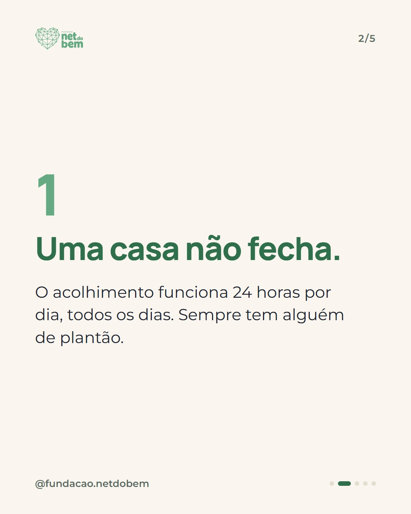
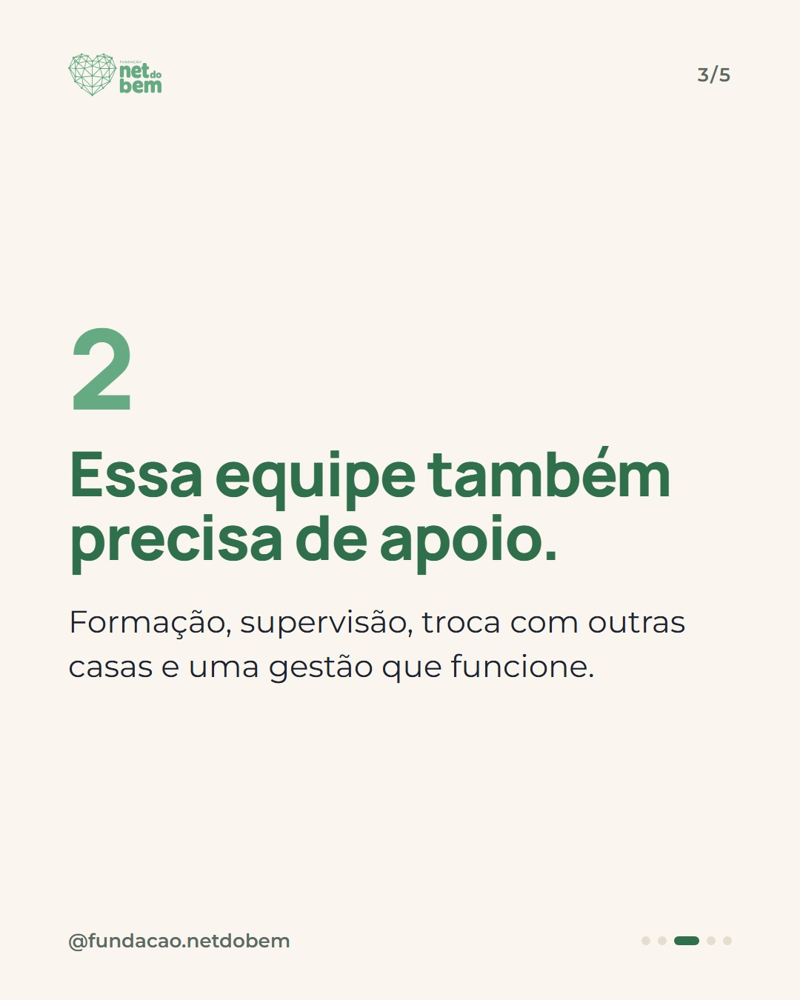
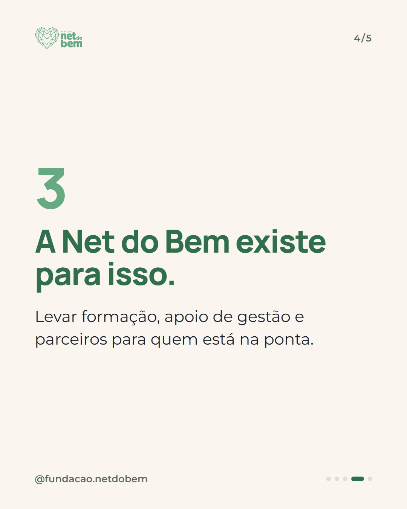
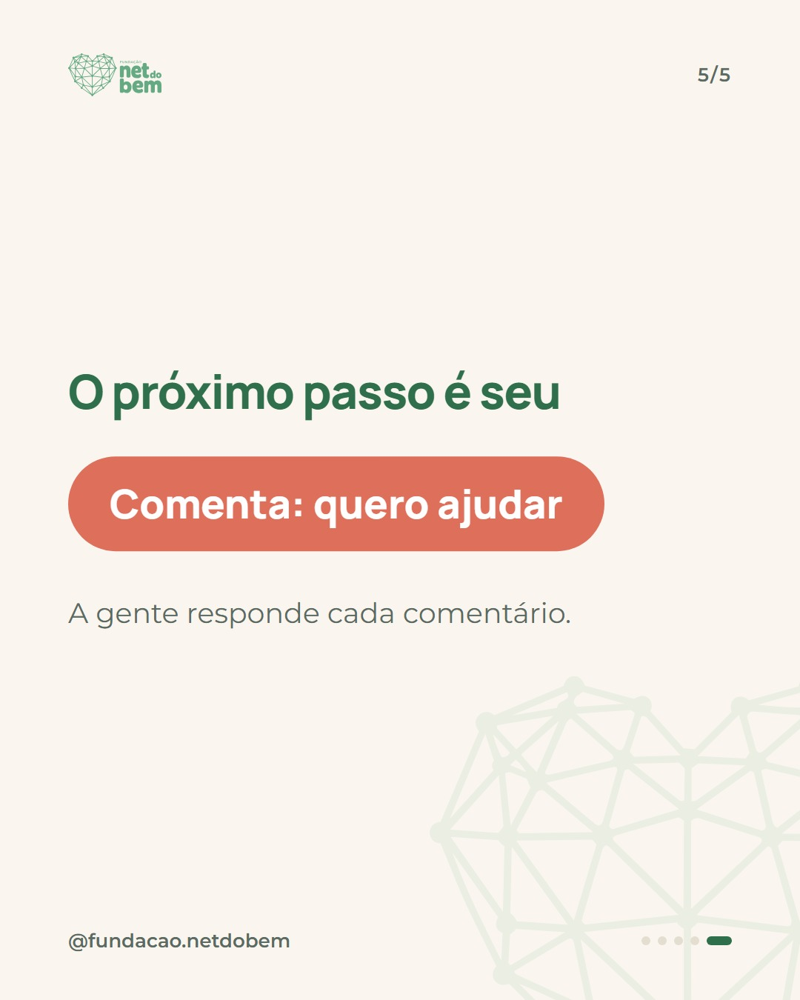
1/5
PautaPauta-mãe 3 · Quem cuida de quem cuida
CTA únicoComenta: quero ajudar
PúblicoEquipes de acolhimento e sociedade
ObjetivoAbrir o território próprio da marca.
Quem cuida de quem cuida?
Uma casa de acolhimento funciona 24 horas por dia, e sempre tem um educador, uma técnica ou uma coordenadora de plantão. Essas pessoas também precisam de formação, supervisão e uma gestão que funcione. A Net do Bem existe para levar esse apoio.
Comenta: quero ajudar.
#FundacaoNetDoBem #Sorocaba #Acolhimento #QuemCuidaDeQuemCuida
Quem cuida de quem cuida?
Uma casa de acolhimento funciona 24 horas por dia, e sempre tem um educador, uma técnica ou uma coordenadora de plantão. Essas pessoas também precisam de formação, supervisão e uma gestão que funcione. A Fundação Net do Bem existe para levar esse apoio.
Comente: quero ajudar.
Carrossel em fundo creme: uma casa não fecha; essa equipe também precisa de apoio; a Net do Bem existe para isso; comenta quero ajudar.
1 ideia · 1 CTA · gancho até 6 palavras · sem criança identificável · sem endereço ou rotina · sem cópia de perfil de referência · sem Imposto de Renda · rosto de adulto só com autorização · legenda revisada por 1 pessoa da fundação.
Post 13 · Quinta-feira, 17/12 · 18h
3 necessidades que ninguém vê
Fase 2 · Quem cuidaPronto Carrossel lista · 5 imagens
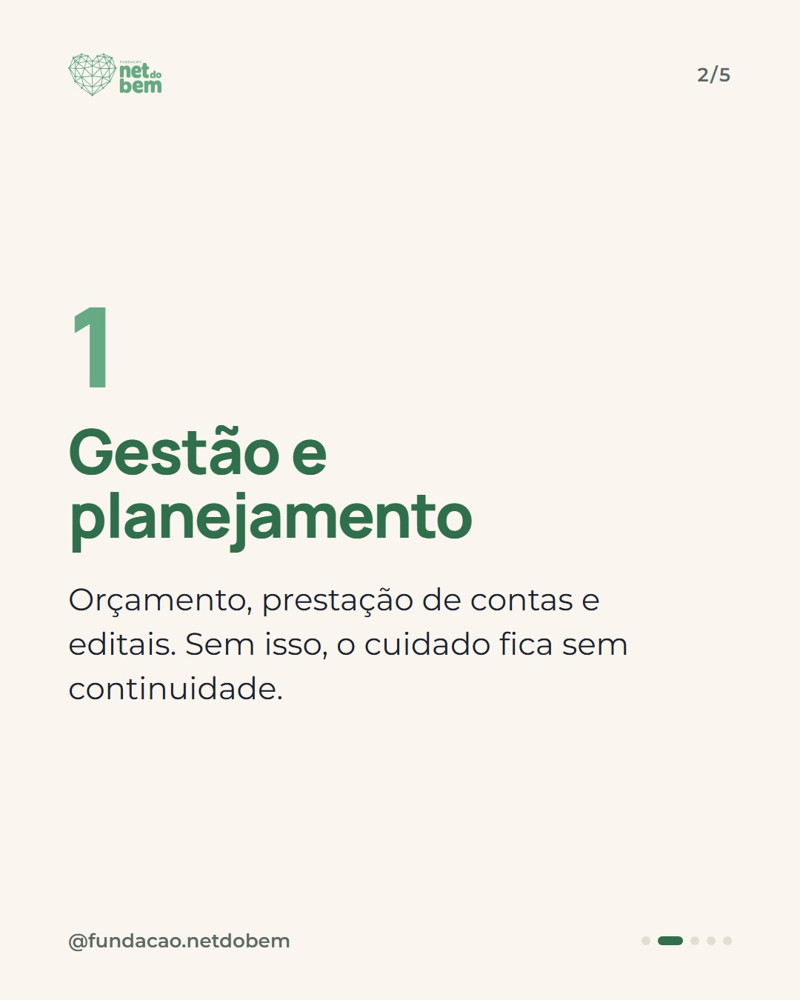
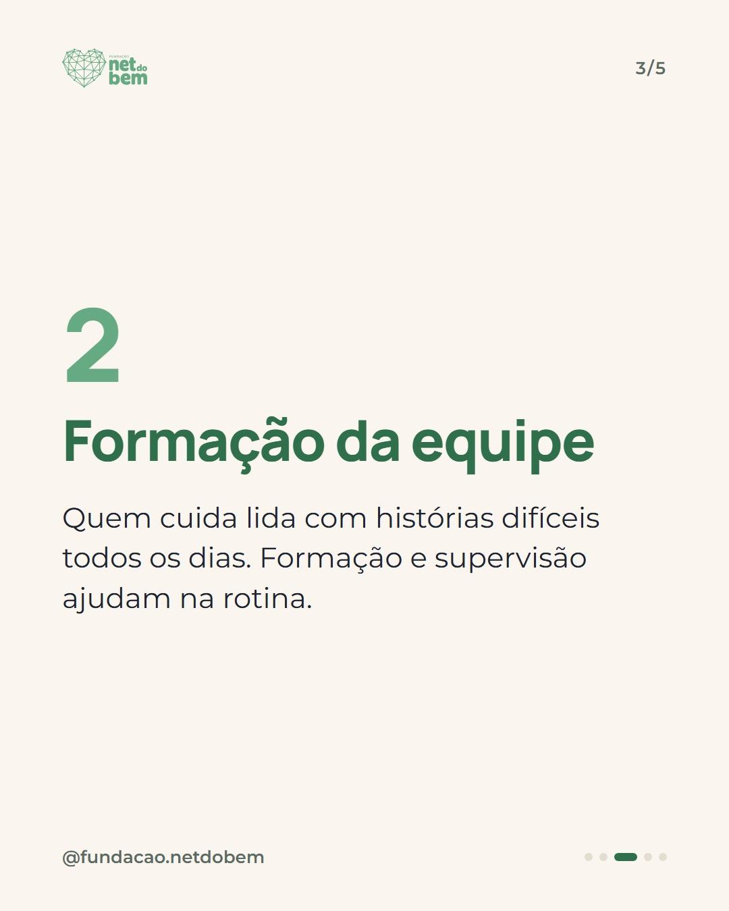
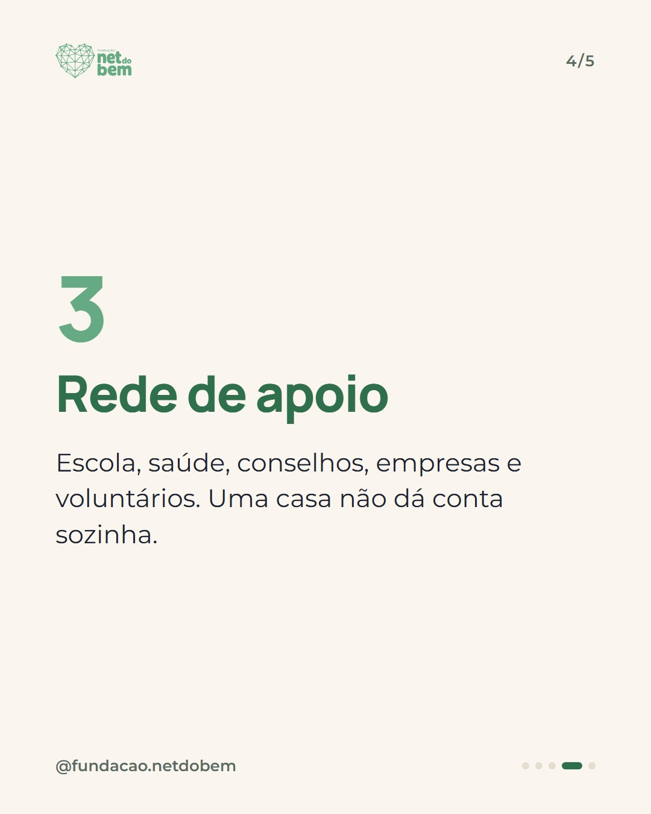
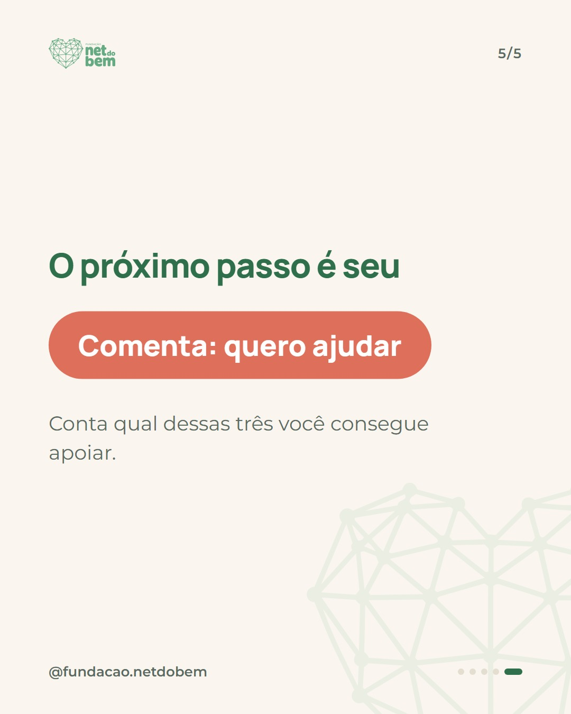
1/5
PautaPauta-mãe 4 · 3 coisas que uma casa precisa
CTA únicoComenta: quero ajudar
PúblicoEmpresas e sociedade
ObjetivoMostrar o trabalho invisível que sustenta o cuidado.
3 necessidades que ninguém vê.
Quando se fala de casa de acolhimento, quase sempre a conversa é sobre doação de itens. O dia a dia também depende de gestão, de uma equipe com formação e de uma rede de apoio por perto.
Comenta: quero ajudar.
#FundacaoNetDoBem #Sorocaba #Acolhimento #QuemCuidaDeQuemCuida
3 necessidades que ninguém vê numa casa de acolhimento.
Quando se fala de casa de acolhimento, quase sempre a conversa é sobre doação de itens. O dia a dia também depende de gestão, de uma equipe com formação e de uma rede de apoio por perto.
Comente: quero ajudar.
Carrossel em fundo creme com três itens numerados: gestão e planejamento, formação da equipe e rede de apoio.
1 ideia · 1 CTA · gancho até 6 palavras · sem criança identificável · sem endereço ou rotina · sem cópia de perfil de referência · sem Imposto de Renda · rosto de adulto só com autorização · legenda revisada por 1 pessoa da fundação.
Post 14 · Sábado, 19/12 · 11h
Por trás de cada casa, tem gente
Fase 2 · Quem cuidaPronto Card de posicionamento · 1 imagem
1/1
PautaCard de posicionamento da semana
CTA únicoComenta: quero ajudar
PúblicoTodos os públicos
ObjetivoFixar o território quem cuida.
Por trás de cada casa, tem gente que precisa de apoio também.
Educadores, cozinheiras, psicólogas, assistentes sociais e coordenadores fazem o acolhimento acontecer. É para essas pessoas que a Net do Bem trabalha.
Comenta: quero ajudar.
#FundacaoNetDoBem #Sorocaba #Acolhimento #QuemCuidaDeQuemCuida
Por trás de cada casa, tem gente que precisa de apoio também.
Educadores, cozinheiras, psicólogas, assistentes sociais e coordenadores fazem o acolhimento acontecer. É para essas pessoas que a Fundação Net do Bem trabalha.
Comente: quero ajudar.
Card verde profundo com a frase em branco: Por trás de cada casa, tem gente que precisa de apoio também.
1 ideia · 1 CTA · gancho até 6 palavras · sem criança identificável · sem endereço ou rotina · sem cópia de perfil de referência · sem Imposto de Renda · rosto de adulto só com autorização · legenda revisada por 1 pessoa da fundação.
Post 15 · Terça-feira, 22/12 · 18h
Dá para cuidar sem se anular?
Fase 2 · Quem cuidaPendência Carrossel educativo · 5 imagens
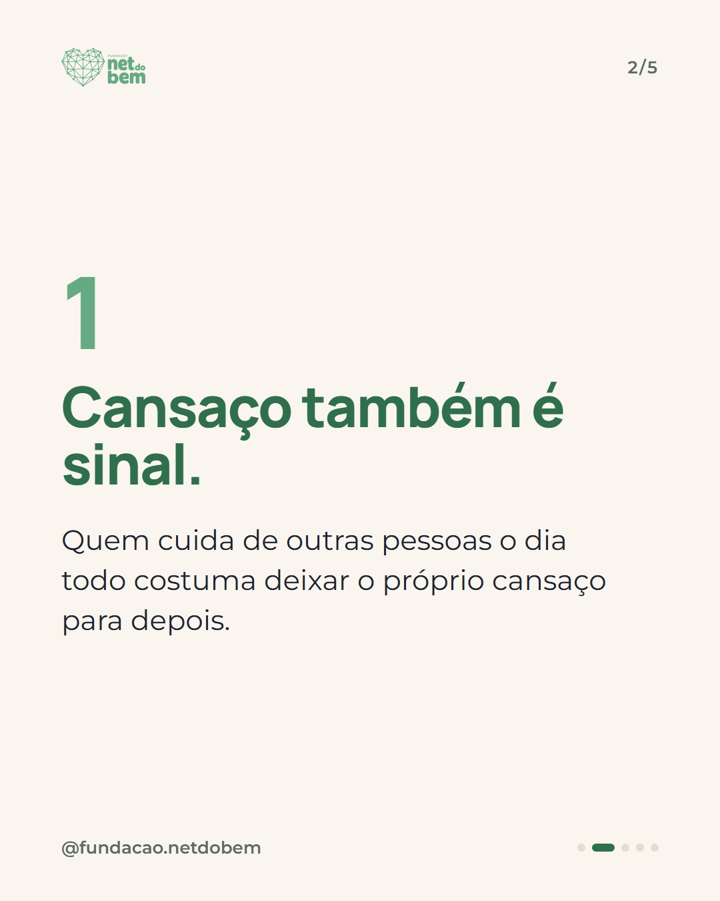
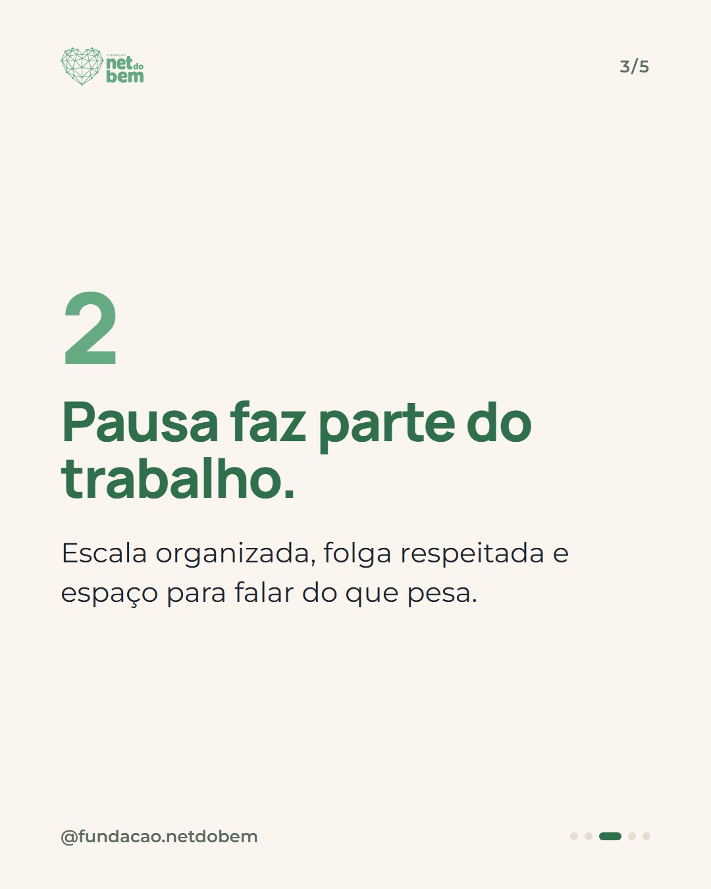
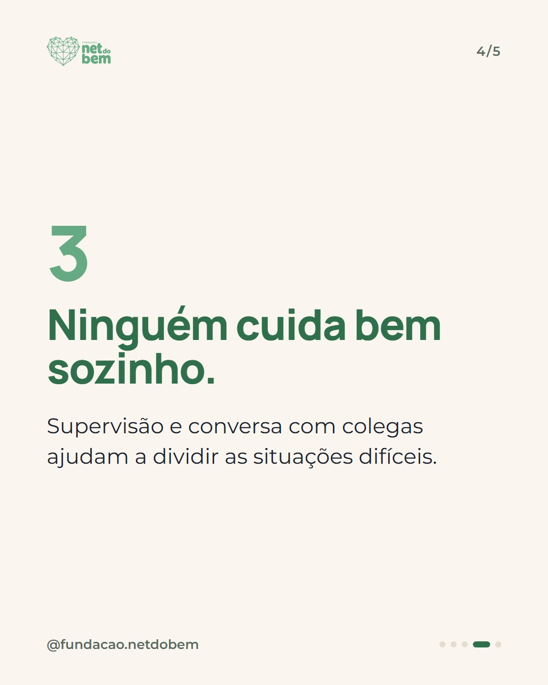
1/5
Rascunho com pendência
Revisão técnica da Patrícia (psicóloga) antes de publicar.
PautaFase 2 · Cuidar sem se anular
CTA únicoCompartilha com quem cuida de alguém
PúblicoEquipes de acolhimento e cuidadores em geral
ObjetivoConteúdo útil para cuidadores no fim de ano.
Dá para cuidar sem se anular?
Quem trabalha numa casa de acolhimento passa o dia atento às necessidades dos outros. Escala organizada, folga respeitada e supervisão ajudam essa pessoa a continuar cuidando bem, inclusive de si.
Compartilha com quem cuida de alguém.
#FundacaoNetDoBem #Sorocaba #Acolhimento #QuemCuidaDeQuemCuida
Dá para cuidar sem se anular?
Quem trabalha numa casa de acolhimento passa o dia atento às necessidades dos outros. Escala organizada, folga respeitada e supervisão ajudam essa pessoa a continuar cuidando bem, inclusive de si.
Compartilhe com quem cuida de alguém.
Carrossel em fundo creme: cansaço também é sinal; pausa faz parte do trabalho; ninguém cuida bem sozinho.
1 ideia · 1 CTA · gancho até 6 palavras · sem criança identificável · sem endereço ou rotina · sem cópia de perfil de referência · sem Imposto de Renda · rosto de adulto só com autorização · legenda revisada por 1 pessoa da fundação.
Post 16 · Terça-feira, 29/12 · 18h
O que eu queria que soubessem
Fase 2 · Quem cuidaPendência Foto real com faixa ou Reels · 3 imagens
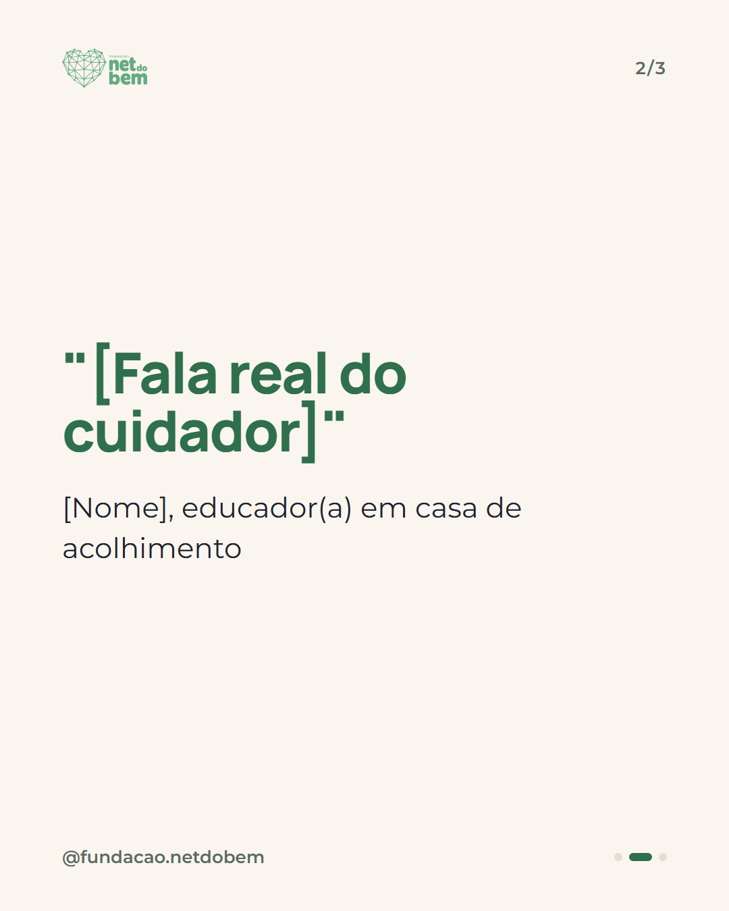
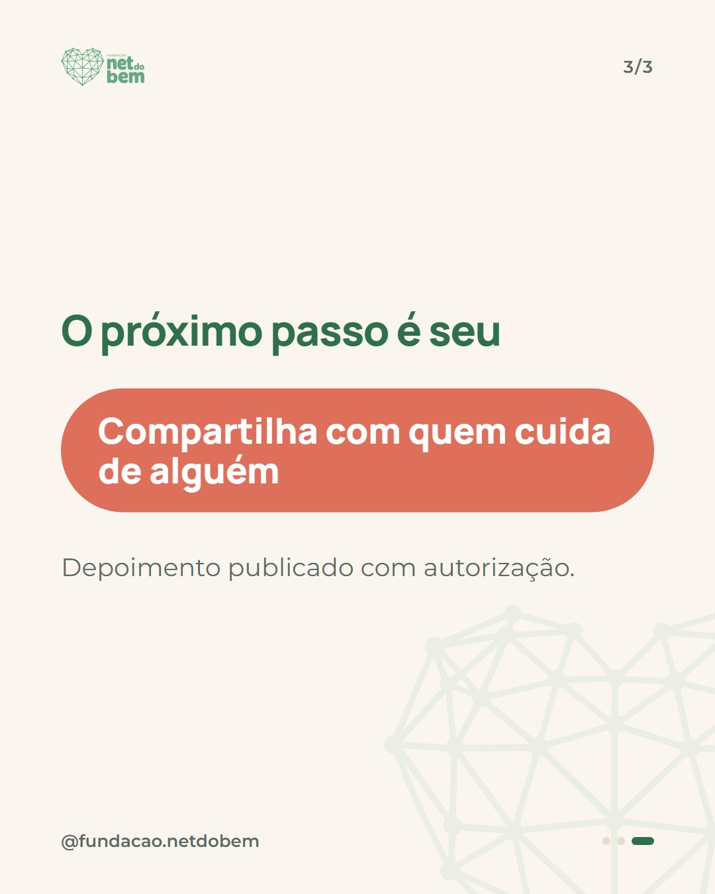
1/3
Rascunho com pendência
Entrevista com um cuidador ou educador adulto de casa parceira, com termo de uso de imagem assinado.
Foto só do adulto, sem crianças, sem fachada, placa ou ambiente que identifique a casa.
A frase do slide e da legenda deve ser fala real da pessoa, sem edição de sentido.
PautaPauta-mãe 8 · Depoimento de cuidador
CTA únicoCompartilha com quem cuida de alguém
PúblicoSociedade e empresas
ObjetivoPrimeira voz de quem cuida no perfil.
Roteiro
Pergunta 1: O que você queria que mais pessoas soubessem sobre o seu trabalho?
Pergunta 2: Que tipo de apoio faria diferença na sua rotina?
Pergunta 3: O que te faz continuar?
O que eu queria que soubessem.
[Nome] trabalha numa casa de acolhimento e topou contar como é a rotina de quem cuida. [Trecho real do depoimento, até 3 linhas]
Compartilha com quem cuida de alguém.
#FundacaoNetDoBem #Sorocaba #Acolhimento #QuemCuidaDeQuemCuida
O que eu queria que soubessem.
[Nome] trabalha numa casa de acolhimento e topou contar como é a rotina de quem cuida. [Trecho real do depoimento, até 3 linhas]
Compartilhe com quem cuida de alguém.
Retrato de um adulto que trabalha em casa de acolhimento, com faixa verde e a frase O que eu queria que soubessem. Não aparecem crianças.
1 ideia · 1 CTA · gancho até 6 palavras · sem criança identificável · sem endereço ou rotina · sem cópia de perfil de referência · sem Imposto de Renda · rosto de adulto só com autorização · legenda revisada por 1 pessoa da fundação.
Posts de reserva
Bastidor de formação de quem cuida (Fase 2). Assim que a primeira formação acontecer. Depende de uma formação real com registro e autorização.
Casa de acolhimento? Responda ao mapeamento (Fase 1 ou 2). Quando a diretoria aprovar. Precisa de um CTA novo ("Acesse o portal na bio"), que não está na lista da seção 11 do briefing.
Fundação Net do Bem · @fundacao.netdobem · Conteúdo preparado pela Substrato Digital